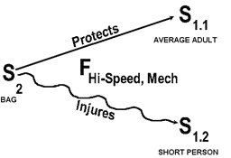
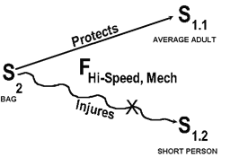
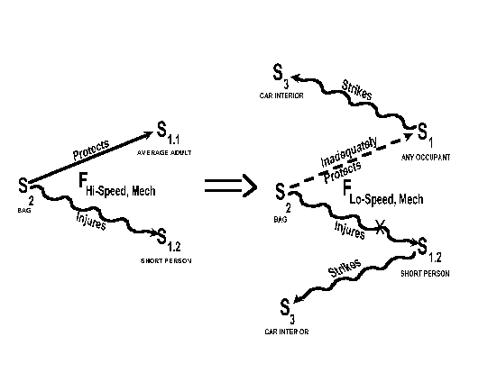
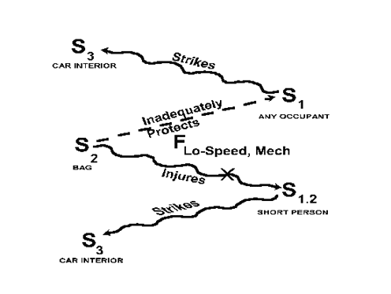
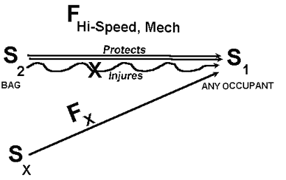
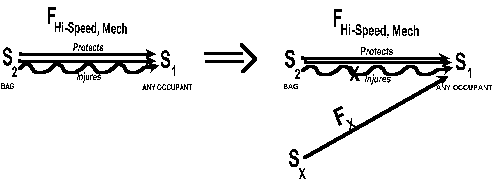
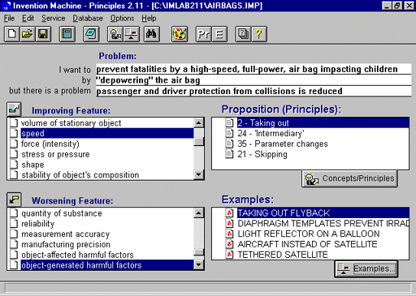
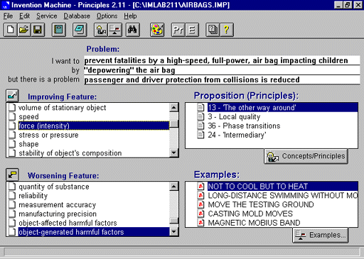
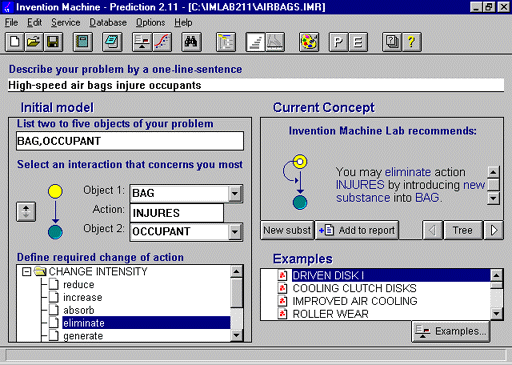

by James Kowalick, Ph.D., P.E. Renaissance Leadership Institute Tel: (916) 692-1944; Fax: -1946; E-mail: headguru@oro.net
The following problem focuses on a critical situation plaguing the automobile industry - child fatalities caused by air bags. Air bags are meant to save lives rather than take them. This report is a synopsis of a design analysis leading to detailed descriptions of next-generation air bag designs. A main conclusion from that effort is that "Design tradeoffs are not necessary. Next-generation designs make no compromises. They provide far better crash protection to all occupants of air-bag equipped cars and light trucks, without causing serious injuries themselves." Dr. Kowalick applies the TRIZ/ARIZ approach to generate breakthrough-level air bag system designs. These designs are available for development and production now. Dr. Kowalick makes use of inventive software for designers: TechOptimizer for problem clarification, definition and prioritization, and Invention Machine Labs for generating solutions. His company, RLI, provides consulting and training for industry on TRIZ, ARIZ and Inventive Software. RLI works with leading-edge company teams to rapidly develop next-generation systems. ARIZ is one of several tools used in problem-solving approach called TRIZ. TRIZ stands for the Theory of the Solution of Inventive Problems. A comprehensive paper, containing detailed descriptions of next-generation air-bag designs, can be purchased through RLI.
Frontal Impact Automobile Collisions.Frontal impacts are the number one fatality and injury mode of automobile crashes, resulting in approximately 65 percent of all fatalities and 65 percent of all injuries. For example, in 1994, on average 37 drivers and 10 front-seat passengers died each day as a result of frontal crashes. The use of seat belts, backed up by air bags for both the driver and passenger, has saved thousands of lives. But air bags are also taking the lives of a smaller, although significant number of occupants - short-statured people and children - typically involved in relatively low speed collisions.
The most recent estimate: if all passenger cars and light trucks on the road were equipped with current-design air bags, more than 3000 lives would be saved per year, as compared to a no-air-bag fleet. This estimate assumes current seat belt usage by occupants.
On the driver's side, 616 seat-belted drivers and 1,686 unbelted drivers would be saved, for a total of 2,302 lives saved. Twenty-five (25) drivers, however, would be fatally injured by drivers-side air bags.
On the passenger's side, 223 belted and 491 unbelted passengers' lives would be saved, for a total of 714 front seat passengers' lives saved. This figure would be offset significantly by air-bag caused fatalities of children sitting in the front seat. If today's rates of child fatalities were experienced with all cars and light trucks fully equipped with current-design air bags, 128 children would be killed annually by the air bags themselves. These 128 child fatalities include 90 children facing forward, and 38 infants in rear-facing child restraints.
With all U.S. cars fully equipped with air bags (drivers' and front seat passengers' sides), 3041 lives would be saved by air bags, and 153 fatalities would be caused by air bags. For every twenty lives saved by air bags, one fatality will be caused by air bags. This is a "compromise" that no nation, legislator, automaker, air bag producer, driver, passenger, or air-bag design engineer will accept or tolerate.
Air bag technology and future designs can must lead to significantly larger numbers of car occupants surviving, no matter at what speed an automobile collision occurs. No undesirable side effects can be associated with future designs. The current air bag problem is simply that the air bags themselves directly cause fatalities.
Product History and Discussion. Air bags are designed to save lives and reduce or prevent bodily injury in moderate to severe frontal and near-frontal crashes. Air bags work best when used with lap and shoulder safety belts. The belts hold individuals in place long enough to allow the air bag to fully inflate before the individual's body contacts the bag. Seatbelt pre-tensioners and adjustable-height seatbelts further prevent individuals from (dangerously) moving forward before the belts have a chance to tighten up. The lower limit of deployment of air bags is a frontal crash equivalent to hitting a solid wall at speeds above approximately 10 miles per hour. In some instances, however, air bags have been known to deploy at even smaller speeds upon impact.
Air bag designs were optimized to protect the average male - 5'9", 165 pounds - and to shield a person not wearing a seat belt. To restrain such a person in a crash, the bag has to deploy with great force, in approximately three one-hundredths of a second. To protect but not cause injuries, the bag has to fully inflate before an individual hits the bag. A recent study found that both driver side and passenger side air bags were less effective for women than for men. Air bags reduced male fatalities from crashes by 14 percent, while reducing female fatalities from crashes by 9 percent, according to the study.
There are approximately 35 million cars and light trucks on the road with air bags; 15 million also have passenger side air bags. Air bags are a legal requirement on the driver's side and will be a legal requirement for passenger side airbags for model year 1998 for cars, and for model year 1999 for light trucks.
In a really bad crash, belted front-seat drivers and passengers can still move forward enough to hit the steering wheel, dash panel, or windshield. Air bags are one ingredient of a total safety system. They act as a "buffer" or cushion between the occupant and the steering wheel, windshield or dashboard.
Air bag functioning begins when crash sensors located in the front of the vehicle detect sudden high-rate deceleration. The sensors electronically trigger an inflator module that inflates the bag. The bag breaks out of its compartment and inflates to a "diameter" that exceeds the steering wheel diameter, and a width/thickness of about twelve inches. The impact sensing and inflation processes happen in less than 1/20th of a second. After inflation, the bag begins to deflate, and is completely deflated within 1/2 second after deployment.
In frontal impacts, vehicle occupants start to move forward in response to (1) pre-impact braking and/or (2) vehicle deceleration as a result of impact. Unbelted front-seat occupants move forward in a fraction of a second, striking the steering wheel, dashboard or windshield. The air bag has to inflate very quickly, faster than an eye-blink, in order to act as a cushion or spring for occupants in higher-speed crashes..
To accomplish this for both adults and children, careful control of the air gas-pressure inside the bag is crucial. This is accomplished by controlling (1) the rate of release of gas from a sodium azide reaction, and (2) the rate of loss of gas through vents or through pores in the air bag fabric. The air bag and the occupant's body come together at a very high net speed. If the vents in the air bag don't allow enough gas to escape before the body hits it, the air bag is a rigid wall, causing serious injury. If the vents in the air bag allow too much gas through, there is little or no cushioning action, and the body moves through the bag, striking the vehicle interior. The result is serious injury. Venting action must be delicately balanced for the air bag system to correctly function.
Air bags have deployed 200,000 times or more, and saved more than 1700 lives since they started being installed in vehicles. They have also taken lives. More than 32 children and 20 adults have been killed by air bags, according to the National Highway Traffic Safety Administration - NHTSA.
As early as 1969, a research paper by General Motors Corporation noted that "a small child close to an instrument panel from which an air cushion is deployed may, in our present estimation, be severely injured or even killed." Nevertheless, in 1984, an NHTSA investigative report concluded that the potential benefits of air bags far outweighed their potential harm to infants and small children. That report referred to the small-child problem as a "theoretical potential that is more than offset by the overall crash protection afforded children."
Children often end up crashing into the air bag as it is inflating. They receive much greater force, over and above the cushioning force required for crash protection. Theoretically, children would be protected if (1) they are wearing their seat belts; (2) they are sitting back in their seats; and (3) their seats are pushed back to the farthest position. But children typically squirm, wiggle out of shoulder belts, play with the radio, and - wanting to see better - sit toward the front of the seat. During a crash, they have less control of their bodies than a typical adult would have. They have proportionately larger heads, making them "jackknife" forward during pre-crash braking (considerably more than an adult does). They typically cannot brace themselves during pre-crash braking, because their feet don't touch the floor.
Infants in rear-facing seats are subjected to more hazards. They are too close to the deploying air bag. This means that they are exposed to extremely high forces. Nine (9) of the child fatalities involved rear-facing infant seats. It is believed that these were unbelted or improperly belted. Wearing seat belts appears to be the best way for adults to protect themselves from the force of an air bag. The best way to protect children under 13 is to buckle them (with a properly secured lap and shoulder belt) in the rear seat.
Air bags need time to fully inflate before contacting occupants. They also need to inflate rapidly to provide cushioning that prevents further forward motion of occupants. But rapid air bag inflation injures occupants who are too close to the bag during deployment. This happens less frequently with properly restrained occupants. Most child fatalities attributed to air bag use fall into one of two groups: (1) infants riding in rear-facing infant seats (placing them very close to the air bag at the time of deployment); and (2) older children riding forward-facing without any type of restraint (they slide forward during pre-crash braking and are too close to the air bag when it deploys). A majority of drivers who receive serious or fatal air-bag-caused injuries are short-statured women who move the driver's seat forward. More than half of fatally-injured drivers are not wearing any type of restraint.
Parents whose children have been killed by automobile air bags say that (1) the public is not getting the word that children up to age 12 should ride in the back seat (five year old Frances Ambrose was knocked unconscious by an air bag during a low speed crash in Nashville, Tennessee. She never woke up. She was properly using her lap and shoulder belt.); (2) new safety warnings do not go far enough; (3) domestic automakers have shown lukewarm support for the new (labeling) program, and that the parents' group are completely disheartened by the industry's inability to deal with the problem; and (4) laws such as those in Germany, Switzerland and Austria, requiring children under 13 to ride in the back seat, should be enacted in the United States. Beth Sanders, a mother whose child was a fatal air bag victim, said that "Children are being buckled in the front seat ... each one of those children are at the risk of being killed instantly ..."
Smaller individuals who drive - men as well as women - are at risk because they have to get closer to the steering wheel (where the air bag is located) to reach the car's pedals. Car consultants say that cars are optimally designed to fit people who are between 5'5" and 5'11" tall. It does matter "how a person is short" - people with long torsoes and short legs have the highest risk.
Even larger individuals who sit too close to the steering wheel are in danger. The American Automobile Association cites 12 inches as the estimated optimal clearance between a driver and the steering wheel. Public Citizen, a consumer group whose head formerly ran the NHTSA, says 6-10 inches. Who and what should the public believe? Everyone agrees that sitting 2-3 inches from the steering wheel is very dangerous. The further away the driver, the greater the margin of safety. But there is a point at which a driver's legs will not reach the floor pedals, and this point is one of the factors that dictate the driver/steering wheel clearance. A solution is to purchase and attach approved "pedal extenders" to the pedals. Pedal system design itself can contribute to major accidents (unrelated to the air bag system), so it is important for consumers to not "rig up" pedal extenders that themselves contribute to accidents.
Automakers say that present air bag designs were dictated by government requirements requiring air bags to catch an unbelted, 170-pound male dummy in a crash test into a wall at 30 miles per hour. This requirement, they say, has made the air bag too forceful for children and smaller women to withstand. They also say that they were prevented from installing less forceful air bags because of these requirements.
Senator Dirk Kempthorne (Iowa) stated that NHTSA was administering a standard that "does harm if not death to children." The Senator cited a hearing over ten months ago in which NHTSA officials testified that 15 children had been killed by air bags. Since then, he noted, the death toll had more than doubled. In response to the Senator's raising the accusation/question that air bags were "killing more children than they are saving," Mr. Martinez, head of the NHTSA, acknowledged this was true. His agency recently put out two proposals for (1) less forceful air bags, and (2) airbags that can be disconnected by consumers using cut-off switches, if necessary. The agency also ordered the use of warning labels for those who use air bags.
Automakers unveiled a proposal as early as August, 1996, allowing them to design air bags that deploy with as much as 30 percent to 40 percent less force. The car makers are backed strongly by the Insurance Institute for Auto Safety, who complained that NHTSA's initial responses to the problems - essentially, more warning signs - was an inadequate response.
Air bags were meant to protect taller adults rather than children and people of small stature -- according to Mr. Iansiti, Michigan Office of Highway System Planning coordinator.
There is industry talk about replacing today's air bags with "smart bags." These "smart bags" would make inflation-rate decisions, depending on the person in the seat, and on the severity of the crash. One smart bag design features "dual-inflation": the ability to deploy two levels of force. It decides whether the crash is a high-speed or low-speed event. Iansiti said that, although smart bags are a good idea, it will take a considerable amount of time (many years) to fully develop reliable designs.
Ralph Nader's Center for Auto Safety (he is the Founder) seeks bags that will not inflate in low-speed crashes (less than 10 miles per hour). The Center points out that all fatalities and serious injuries caused by air bags were in low-speed crashes, and that in high-speed crashes, either the air bag protected people, or they would have died anyway. Most air-bag manufacturers have chosen between 12 to 15 miles per hour as the "trigger point" for air bag deployment. Actual crash records, however, indicate that some air bags deploy even at collision speeds as slow as 7 miles per hour.
"Depowering," says the Auto Safety Center's director, Clarence Ditlow, "offers advantages to drivers, but if they're made safe for children, they won't be powerful enough to take care of that average male in high speed crashes who isn't wearing his seat belt."
On Monday, December 30, 1996, the federal government conceded that its proposed (new) air-bag rules could save the lives of 83 children a year, but could cost up to 1,200 adults' lives. This is the first time that the NHTSA provided a statistical estimate of the trade-off it sees in making "safer" air bags. These estimates assume dual air bags in all cars and trucks, and assume that only two out of three Americans buckle up.
In its Safety Standard on Occupant Crash Protection (49 CFR Part 571 [Docket No. 74-14; Notice], RIN 2127 - AG59), NHTSA states : "There is a possibility that . . . this rulemaking . . . could also result in an even larger number of unbelted occupants not being saved by air bags." NHTSA is also considering a petition by Anita Glass Lindsey to specify the use of a crash dummy representing a small-statured female in testing the performance of safety belts and air bags.
New rules would reduce the 200-miles per hour inflation speed of new-vehicle air bags by up to 35 percent, and allow air bag disabling by owners (or mechanics). Bags inflating at 200 miles per hour can snap the neck of a child or small adult riding in the front seat. Lower powered bags would be used until "smart" air bags are developed. "Smart bags" supposedly sense a seat occupant's size and adjust the force accordingly.
Air bag designs differ in their forcefulness by more than 100 miles per hour - according to the last 1990 government test results. They also differ in the angle of deployment. Some are recessed to increase the passenger or driver clearance; others are not. The Auto Safety Center suggested a possible recall in the case of air bags in the Ford Taurus, Chevy Corsica and Chrysler mini-van, because of their statistical over-representation among air-bag caused injuries and fatalities. But NHTSA said at that time that no available information suggests that one make and model of car is worse than another.
In Japan, Toyota and Nissan announced their intention to develop smart air bags that adjust deployment speed according to passenger weight. The Japanese Manufacturers Association says that in Japan, the rate of passenger car air bag use rose from 6% in 1994 to 34% in 1995, and to approximately 60% in 1996. They fear that higher air bag use in Japan might lead to accidents like those reported in the United States.
The less powerful U.S.-proposed air bags will be more effective than current air bags if occupants are belted - so says the government. NHTSA also says that less powerful air bags would also provide less protection to unbelted adults in severe crashes, and will not eliminate risks to children. The agency says that less powerful bags might only save 39 to 83 of the 128 children the government estimates each year would be killed if no changes are made to current air bag designs.
Automakers have been pushing for "final" rules from NHTSA. They need to get safer air bags in the first 1998 models rolling off the assembly line next spring. President Clinton endorsed the current new rules in a December, 1996 radio address.
Concerning the tradeoff, Chuck Hurley, spokesman for the National Safety Council, dismissed the lives of adults that might be lost by depowering air bags, saying, "We have a higher obligation to protect children than unbelted adults. Children can't protect themselves, and (they) depend upon parents, care-givers and the government to protect them."
The National Center for Policy Analysis conducted a 1993 study involving post-1989 model year vehicles, and reached the following (paraphrased) conclusions:
Discussion of the Problem Situation. As in most complex problems, the specific problem for the air-bag-caused fatalities situation is not yet well defined. But something has to be done about the significant number of child fatalities caused by air bags. This is both a real and an emotionally charged issue. No one doubts that the presence of air bags saves lives of drivers and passengers. No one wants to intentionally degrade the life-saving performance of air bags - even temporarily - to resolve a disastrous side effect of using air bags. Some "solutions" have already been suggested by interested parties. Pressure from special interest groups demands solutions as soon as possible. Yet there is considerable uncertainty and lack of action. Why? Is this problem any different from other complex problems?
The missing element in the air bag problem is a strong sense of problem definition - defining the right problem to work on. The real problem is that there is a lack of a strong problem definition. These are the questions: (1) What is the specific problem to be addressed and resolved? (2) What course of action should be taken? (3) What are the problem constraints?
In the beginning stages of problem solving, it is easy to make wrong moves and bad decisions. Without a strong, specific problem definition, delay and indecision are common.
A useful approach is to employ functional analysis. Functional analysis is a process that (1) examines a technical system from the viewpoint of its functions, (2) considers functional priorities and (3) considers costs associated with system functions.
The author's firm, Renaissance Leadership Institute, applied functional analysis to the air bag system problem. The author used TechOptimizer, a software package that organizes the investigative approach to problems, simplifies the technical system involved, and leads designers to the key problem to pursue first.
The present report is a synopsis of a more comprehensive study of future air bag designs. These next-generation designs make no compromising tradeoffs on human lives - whether they be the lives of drivers, adult passengers or children. These designs also offer car occupants far better protection from higher-speed collisions. The design solutions were generated using the TRIZ approach (TRIZ is a foreign acronym for "Theory of the Solution of Inventive Problems").
The Problem Situation. Applying TechOptimizer to the information in preceding sections of this report leads to the specific problem situation. Table 1 (see next page) lists nine air-bag system "objects" pertinent to the air bag problem. These objects are listed (1) in the first column of the table, as well as (2) along the top of the table. The table contains 28 functional statements, of which 12 are useful functions and 16 are harmful or undesirable functions. From Table 1, functional statements can be generated by reading from the left column, moving horizontally to the appropriate cell, and then upwards to the top row of the table. For example, a "harmful" functional statement is "REDUCED- POWER AIR BAG INADEQUATELY PROTECTS ADULT PASSENGER."
The two interacting objects which really define the problem-at-hand are "FULL POWER AIR BAG" and "CHILD PASSENGER or SHORT STATURED DRIVER." The harmful interaction verb is "INJURES." Careful modification of terms leads to the following problem situation:
Air bags expand so rapidly and forcefully that, in striking the body under certain conditions, they cause fatal injuries to children and short adults. What can be done?
Problem Analysis. The objects involved in the problem situation are the bag and
an occupant (child or adult). Two locations are considered as problem zones: the
driver's seat, and the front passenger's seat. The useful interaction is described by the
verb "protects," and the harmful interaction by "injures."
An "S-Field model" showing these functions is shown below:

Goal. The primary "useful" function between the air bag and the (average adult) occupant is: "Bag Protects Occupant." This function is indicated by an arrowed, continuous line between the air bag and an average adult (driver or passenger). The wiggily-arrowed line in the S-Field model represents the "harmful" function between the air bag and a short driver or child passenger: "Bag Injures Occupant." The letter "S" stands for "substance." S1 is the substance (or object) being changed, modified, detected or otherwise worked on in some way. In this problem, S1 is the occupant, whether he is an average adult (S1.1), or a short adult or child (S1.2). S2 is the substance or technical system that interacts with S1 to modify it in some way. S2 is the air bag.
The "field" F represents the type of energy that makes the harmful interaction possible. For this problem, a high-speed, mechanical (pneumatic/kinetic) field accelerates the air-bag to a high speed. During expansion, the air bag exerts a strong force on any parts of the body it contacts. An excessively high-speed, forceful air bag causes fatal injuries (especially to children, short passengers, non-belted occupants) to anyone sitting too close to the bag while it is expanding).
The design goal is to eliminate this harmful (fatal) function. Elimination of a harmful action is symbolized by "crossing out," using the letter "X," the wiggily interaction line between the air-bag and the short passenger, as shown below.

A design modification is required to eliminate the harmful function, "Bag Injures Occupant." The TRIZ approach has been applied to this problem; the results of its application are high-level, conceptual air-bag designs.
Discussion. The U.S. Government recommends resolving the air bag problem by reducing the "power" of the air-bag (the power defines the air bag's rate of inflation and forcefulness). Reducing the "power" may reduce the probability of fatal consequences from the air bag itself.
This "solution," however, raises a further concern: decreasing air bag power lowers the protection level of air bags in higher-speed collisions.
Very often, engineering problems involve technical conflicts, where a certain "improving action" creates another problem (a "worsening action"). The technical conflict created by depowering an air bag is stated below:
"If the power level of the air bag is lowered in order to reduce occupant fatalities caused by the air bag itself, this lowering of power leads to an increase in the level of fatalities caused by higher-speed collisions."
This "conflict" is shown below as an S-Field Model. In this S-Field model, the initial problem situation on the left (higher powered air bag saves lives but injures some occupants, leading to fatalities). This model is followed by a "transformation" symbol indicated by a double-lined arrow. The suggested "solution" to the initial problem of air bags being "overpowered," leads to yet another technical conflict, shown on the right: lower powered air bags no longer seriously injure certain occupants, but they do not offer adequate crash protection to occupants involved in higher-speed collisions.

S3 represents those parts of the car interior (e.g., windshield, dashboard, steering wheel) that the inadequately-protected occupant will strike in a higher-speed crash, just because of the lower-powered air bag (it cannot open fast enough to protect the occupant). The dashed interaction line indicates "inadequacy" of the crash protection function for any frontal occupant in the automobile. The wiggily lines on the right indicate injury to occupants who strike the car interior (windshield, dashboard, steering wheel).
The laws of physics do not lie. If air bag inflation velocity is lowered, taking more time for it to inflate, more occupants will die in higher-speed accidents. If the air bag gas quantity or pressure are reduced, the "buffering" action of the air bag will be reduced, and more occupants will die in higher-speed collisions. To pronounce that "It's OK to sacrifice lives due to inadequate protection of occupants in higher-speed collisions" is poor management, poor customer consciousness, and poor engineering. Something has to be done about this problem - something other than a tradeoff "solution" that compromises occupants' lives.
The Technical Conflict. The S-Field model of the situation just discussed represents a "classical" technical conflict: If something is done (with an improving feature) to improve one situation, another situation gets worse (because of a worsening feature). In the present case, if the speed/power of the expanding air bag is lowered (improving feature) to reduce fatal effects of higher-powered air bags on certain occupants, then the air bag's main function of protecting occupants' bodies from injury is degraded (worsening feature). This technical conflict is modeled below.

Tradeoffs and Compromises. "Tradeoff" and "Compromise" thinking is the traditional approach for solving problems. It means "giving something up." Most often, "tradeoff" designs offer a compromise a little between two seemingly opposing functions. When "compromise designs" cost human lives, it is not smart to field such designs for public use. The tradeoff and compromise mentality reflects an inability to "think outside of the ordinary mental box."
The way that problems are formulated often leads to tradeoff thinking. Besides stating the problem as a conflict, it is extremely useful to express the problem as a "physical contradiction."
Physical Contradictions. Framing a problem as a physical contradiction means (1) selecting one part of a technical system (usually a part that can be changed, modified or redesigned), and assigning diametrically opposing requirements or properties or characteristics to it. For example, formulating the physical contradiction for the air bag problem begins with selecting the "air bag" as the object, and then stating the contradiction:
"The bag must be
high-speed (to save occupants' lives in more serious collisions),
and
low-speed (to not injure passengers upon bag contact during bag expansion)."
This physical contradiction is used as a design-requirement reference point. Compromises are not acceptable. The designer must "go out of the conceptual box" to find air bag designs that satisfy this physical contradiction.
Two Important Conflicts. Problems that include technical conflicts are known as "inventive problems." Inventive problems are higher-level problems, and their solutions are higher-level solutions. Technical conflicts inherent in an inventive problem can be expressed in at least two different ways. It is enlightening to do this when solving problems. For the air bag problem, these two different conflicts can simply be called Conflict #1 and Conflict #2:
Conflict #1. If the air bag speed is very high, the occupant's chance of being protected from injuries as a result of a collision are significantly enhanced, but certain passengers will receive fatal injuries from being impacted by the air bag itself.
Conflict #2. If the air bag speed is lower, even very short occupants will not be fatally injured by air bag impact, but statistically more occupants of vehicles will be fatally injured as a result of more severe collisions.
Selection of Conflicts. Given the two forms of conflicts, the designer and problem-solver now selects the conflict to resolve. Because the primary function of an air bag is to save the lives of occupants from collisions (light, moderate and severe), Conflict #1 is selected as the conflict to be resolved. The next step is to develop a design vision, in the form of the "Ideal Final Result."
Ideal Final Result (Design Vision). "To design a very high-speed air bag that protects all types of occupants from the hazards of all levels of frontal collisions, with the air bag itself causing no adverse effects to any type of occupants. This design solution should raise no new problems, should require minimal system changes (use of existing system resources is encouraged), and should be as good or better at its primary function than the existing air bag system design."
Solution (the "X" Element). There is an "X" element which, when applied to the air bag system, allows for a very high-speed air bag that causes no injuries or adverse effects to any type occupants, generates no further problems, and does not further complicate the air bag system. If possible, "X" should come from existing system resources.
Note: The "X" element could be an "object," but it does not have to be an object. It could be a field, but it does not have to even be a field. "X" represents some change, modification, or varying of the system. It could, for example, be a change in temperature, or a "change of state" of some object in the system, or even in the environment. It could also be a dimensional change in an object, or a change of an object's properties, etc. It is important to state just what "X" should do to the system, or what it should do in the system (e.g., what it should support, or contain, or eliminate, or improve, or offer, etc.).
Solution Model. Show the solution model that reflects the solution to the selected Conflict #1.
Conflict #1 is: "If the air bag speed is very high, the occupant's chance of being protected from injuries as a result of a collision are significantly enhanced, but certain passengers will receive fatal injuries from being impacted by the air bag itself."
And the "X" element solution statement is: "There is an 'X' element which, when applied to the air bag system, allows for a very high-speed air bag that causes no injuries or adverse effects to any type occupants, generates no further problems, and does not further complicate the air bag system. If possible, 'X' should come from existing system resources."
The Solution Model is shown below.

Model of the Transformation.
For Conflict #1, before the solution model shown above, the air bag speed is very high (indicated by two arrow-lines), and this "excessive" bag speed resulted in the bag's injuring some occupants. This is reflected in the left-hand model below, followed by a transformation symbol, and the solution model. Altogether, these symbols represent the "model of the transformation."

System Resources. In order not to complicate the new air bag design, we stated above that the "X" element should come from existing system resources. Therefore it is a good idea to make a list of these resources (below).
System Resources
| The Interacting Objects | AIR BAG* OCCUPANT* |
| Surrounding Objects | EXTERNAL AIR SEAT SEAT BELT DOOR |
| Fields | CAR MOTION IMPACTOR MOTION AIRBAG PRESSURE AIRBAG MOTION* OCCUPANT MOTION* SEAT BELT FORCE GRAVITY |
Among these system resources, the symbol (*) indicates primary resources that are associated with the interaction under consideration. There are two primary resource objects and two primary resource fields.
Making the Solution Statement More Specific and More Demanding. The solution statement is rewritten by replacing the word "X-element" by the four primary resources marked by an asterisk (above), one at a time. This leads to one generic, and four more specific solutions.
There is a purpose in rewriting the solution statements with the "X-element" being replaced by the key objects and actions relating to the interaction. It is to force the designer to consider solutions that come from within the system: "system resources." Such solutions tend to be elegantly simple. Each of the four solutions described above provide "idea seeds" for conceiving and developing a next-generation air bag system that satisfies the design vision as expressed by the ideal final result:
"To design a very high-speed air bag that protects all types of occupants from the hazards of all levels of frontal collisions (i.e., collisions at both lower and higher speeds), with the air bag, during expansion, causing no adverse effects to any type of occupants. This design solution should raise no new problems, should require minimal system changes (use of existing system resources is encouraged), and should be as good or better at its primary function (protecting occupants during from the adverse effects of collision) than the existing air bag system design."
Specific Solution(s). There exist several "breakthrough" approaches for making the above solution statements even more specific (i.e., for generating design details of specific air bag systems that satisfy the ideal final result).
Standard Solutions. Many technical problems can be expressed as S-Field models that have known generic solutions. These generic solutions are also expressed as S-Field Models, and have been previously catergorized - based upon a study and analysis of the global patent collection. The author has used these previously-known, "standard solutions" to create several conceptual air bag designs.
There are five different "classes" of standard solutions. Class 1 Standard Solutions are for (A) creating functions/interactions when there is an incomplete S-Field Model (to have a function, three elements are required in general: S1, S2 and a Field); and (B) Breaking up or destroying unwanted interactions. Class 2 Standard Solutions are for enhancing the performance of system functions that already exist. Class 3 Standard Solutions offer further enhancement and system simplification, according to the laws of evolution of technical systems. Class 4 Standard Solutions are a special class dedicated to measurement and detection problems and systems. Class 5 Standard Solutions consist of rules for applying Standard Solutions and is dedicated to system simplification.
For really complicated problems, the Standard Solutions approach assists designers in conceiving high-level design concepts roughly half of the time. It takes advanced training in TRIZ in order to effectively apply Standard Solutions to solve a problem.
Technical Conflict Resolution with Inventive Principles. Given a technical conflict such as
"Depowering the air bag prevents air-bag caused fatalities for some children and short adults, but occupant protection is compromised, especially in higher-speed collisions,"
There are universal "inventive Principles" that can be used to resolve the conflict, and create a breakthrough air bag design, without compromising on or trading off occupant fatalities. These inventive principles are quite specific to the type of conflict represented by the problem.
One of the expert systems in The Invention Machine Lab software package is called "Invention Machine Principles." This is based upon the TRIZ conceptional approach. The author used this software to resolve the conflict expressed above. The software prompted the author to apply seven inventive principles to the problem, to generate next-generation air bags. This inventive process is described in Attachment A: Example of Application of Invention Machine Principles Software to the Air Bag/Child Fatality Problem.
Predicting the Complete Evolutionary Path of Next-Generation Air Bag Systems. All technical systems, including air bag systems, follow a predictable path of technical evolution. This technology forecasting capability is a part of the TRIZ approach, and it is also available as software. The Invention Machine Labs software includes this approach as an expert system called "Invention Machine Prediction."
The author used this approach to generate 48 possible generic design prompts for conceiving specific, next-generation air bag designs. The 48 possible generic design prompts are included in Attachment B. Example of Application of Invention Machine Prediction Software to the Air Bag/Child Fatality Problem.
~ ~ ~ ~ ~ ~ ~ ~ ~ ~ ~ ~ ~ ~
BIBLIOGRAPHY
Just the Facts About Air Bags, Michigan Congress of Parents & Teachers (last modified: Monday 13-Jan-97); Questions: webmaster@michiganpta.org
Ford Increases Contribution to Air Bag Safety; Pushing Aggressively for Technology Advances: Ford News Briefs Weekly News Digest, January 8, 1997
Air Bag Information: NHTSA People Saving People (web site)
NHTSA Public Workshop on Air Bags (announcement of February 11/12, 1997 workshop)
Air Bag Deactivation, NHTSA notice in Federal Register on January 6, 1997
Manual Cutoff Switches for the Passenger-Side Air Bag, Final Rule, in Federal Register, January 6, 1997
Air Bags to Inflate Less Aggressively, Notice in Federal Register on January 6, 1997. Public comments solicited before February 5, 1997.
Federal Motor Vehicle Safety Standards: Occupant Crash Protection, 55-page document (downloaded from the web in January, 1997)
The figures on the following page illustrate the application of the Invention Machine Principles expert-system software to the air bag/child fatality problem.
The expressed "problem goal" is written in the first line as: "prevent fatalities by a high-speed, full-power, air bag impacting system."
The second line asks for one possible solution (using some "improving feature"). The solution chosen is the one proposed by NHTSA: "depowering the air bag."
The third line is for any objection, or problem, or potential problem raised by the preceding "solution" (which is related to a "worsening feature": "passenger and driver protection from collisions is (generally) reduced."
Under the list called "Improving Feature," there is a menu of 39 possible engineering and technical "features" or "parameters." The user must select the feature from this menu, that most closely matches what occurs when moving from line one to line two on the software pages shown. In other words, what feature(s) was changed in depowering the air bag so that children's lives would be saved? Two features come to mind: air bag speed and air bag force. These are selected (shaded in) as "improving features" on the next page.
Similarly for the "Worsening Feature": what feature might get worse when the above improving features are implemented? The feature that comes to mind is "object-generated harmful factors." I.E., if the air bag is the "object," and we changed this object (by reducing its speed and force), these reduced characteristics of the object itself (the air bag) generate additional harmful factors (the degree of passenger and driver protection during collision is most likely reduced - especially for higher-velocity collisions).
The software recommends using 7 inventive principles to provide breakthrough solutions to the air bag/child fatalities problem: (1) Taking Out; (2) Intermediary; (3) Parameter Changes; (4) Skipping; (5) The Other Way Round; (6) Local Quality; and (7) Phase Transitions. Applying these to the air bag/car occupant system results in several breakthrough air bag system designs, satisfying the dual requirement that (1) the air bag protects occupants involved in higher velocity collisions, and (2) the air bag itself causes no injuries to occupants.


The solutions emerging from the use of the "Inventive Principles" approach generally satisfy the following criteria:
Details of new, specific, breakthrough designs generated from applying TRIZ and Invention Machine expert system software to this problem are presented in Dr. James Kowalick's comprehensive report on this subject.
The Prediction mode of Invention Machine Lab software was applied to the air bag fatality problem to produce forty-eight generic solution prompts. A picture of the Prediction-mode screen is shown below, followed by the solution prompts.

The following 48 statements are only "generic" design solutions. TRIZ-style abstract and "analogic" thinking has to applied to each of these solution statements, to generate next-generation air-bag designs. These next-generation air-bag designs are described in detail in Dr. Kowalick's comprehensive report.
Eliminate air-bag-caused fatalities and injuries by changing the design in the following way: distributing incompatible features among the occupant and its parts. Describe the change(s), and - if possible - how such changes will meet the design goal(s). Add sketches where required, to complement and clarify the description. ~ ~ ~ ~ ~ ~ ~